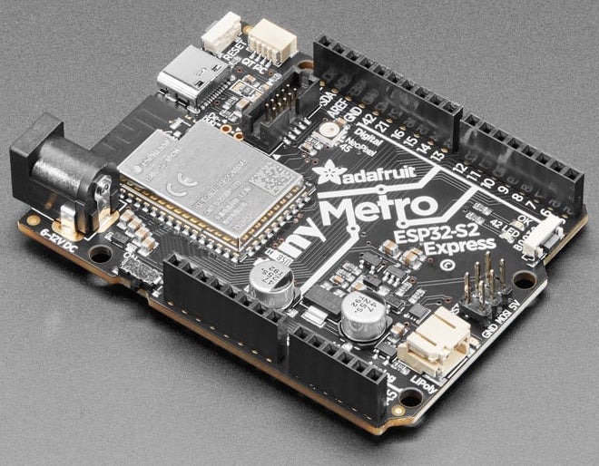

Microcontroller Board (MCU)
To control the robot, we use an Adafruit Metro ESP32-S2. This is an UNO-shaped board, compatibile with Arduino shields. It embed an the ESP32-S2, a highly-integrated, low-power, 2.4 GHz Wi-Fi System-on-Chip (SoC) solution that now has built-in native USB as well as some other interesting new technologies like Time of Flight (ToF) distance measurements.

Guide
We recommand the Adafruit guide to the Metro ESP32-S2. It covers a lot of ground:
- Overview
- Pinouts
- Pin names
- Pin numbers
- ROM Bootloader
- Web Serial ESPTool
- Install UF2 Bootloader
- Welcome To CircuitPython
- Install CircuitPython
- CircuitPython Essentials
- Arduino IDE Setup
- Debugging with OpenOCD
Features Summary
- ESP32-S2 240MHz Tensilica processor - the next generation of ESP32, now with native USB so it can act like a keyboard/mouse, MIDI device, disk drive, etc!
- WROVER module has FCC/CE certification and comes with 4 MByte of Flash and 2 MByte of PSRAM
- Power options: 6-12VDC barrel jack or USB type C or Lipoly battery
- Built-in battery charging when powered over DC or USB
- Precision battery monitoring via MAX17048 on I2C
- UNO-shape so shields can plug in
- Reset and DFU (BOOT0) buttons to get into the ROM bootloader (which is a USB serial port so you don't need a separate cable!)
- Serial debug pins (optional, for checking the hardware serial debug console)
- JTAG pads for advanced debugging access.
- On/Off switch
- STEMMA QT connector for I2C devices
- On/Charge/User LEDs + status NeoPixel
- Works with Arduino or CircuitPython
- 53.2mm x 72mm / 2" x 2.8"
- Height (w/ barrel jack): 14.8mm / 0.6"
- Weight: 22.5g